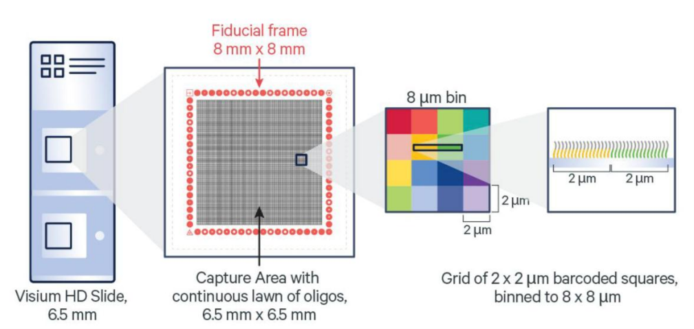
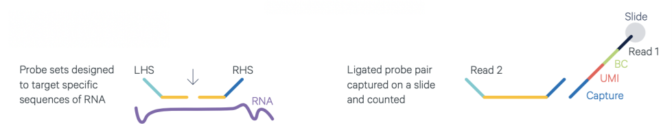
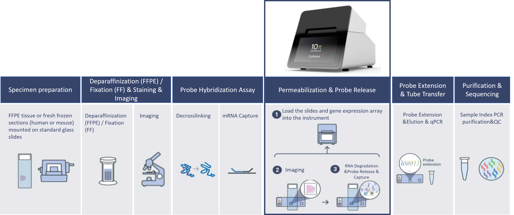
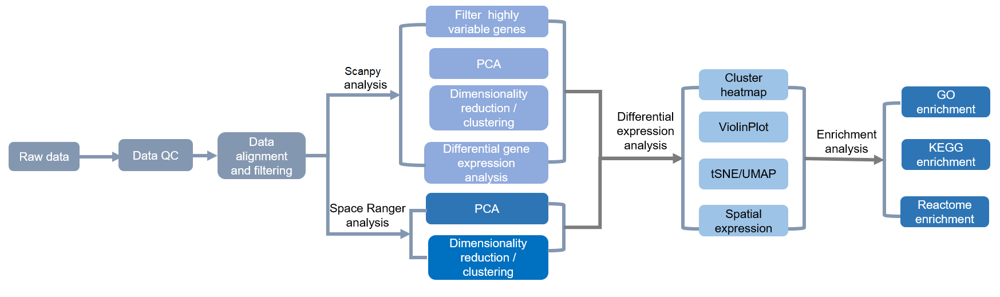

Novogene 10X Genomics Visium HD Standard Analysis Report
| Contract information | Contract content |
|---|---|
| Contract ID | X999SC99999999-Z01-J001-B1-2 |
| Contract name | Visium_advanced_test |
| Report time | 2026-06-03 |
| Batch ID | X999SC99999999-Z01-J001 |
| Service hotline | 400-658-1585 |
| Service Email | op-scrna@novogene.com |
1 Experimental Procedure
Visium HD Spatial transcriptomics is an unbiased detection of gene expression based on complete tissue sections. This technique preserves the morphological information of samples by performing H&E staining and capturing images of tissue slices placed in specific capture regions on slides. Subsequently, the same sample undergoes permeabilization, allowing the release of RNA, which hybridizes with oligonucleotide probes in the capture region, marking different bins with spatial barcodes. Visium HD platform slide is a continues lawn of 2x2 um barcode squares without gap, acheiving single-cell scale spatial resolution. The platform combines gene expression activity information with tissue morphology information, presenting a new view of tissue and gene expression complexity. The core of Visium HD spatial gene expression technology lies in spatial barcode slides, and the specific technical principles are shown as follows:

Figure 1.1 Principle of Visium HD spatial technology. 6.5 x 6.5 mm capture Areas with a continuous lawn of oligonucleotides arrayed in ~11 million 2 x 2 μm barcoded squares without gaps, with each spot containing millions of spatial barcode capture probes. DNA probes, including Illumina sequencing primer sequences, spatial barcodes, UMIs, and poly(dT), are anchored at the 5' end on the slide.
Visium HD Spatial Transcriptomics technology supports samples embedded in formalin-fixed paraffin (FFPE) or fresh frozen (FF) tissue samples embedded in OCT. For FFPE：A 5 µm section was taken from the FFPE tissue block with a microtome (Leica HistoCore MULTICUT). Sectioning, deparaffinization, H&E staining and imaging followed the Visium HD FFPE Tissue Preparation Handbook (CG000684). For Fresh Frozen：10 µm section was taken with a cryostat (Leica CM3050 S). Tissue block preparation, sectioning, H&E staining, and imaging followed the Visium HD Fresh Frozen Tissue Preparation Handbook (CG000763).
1.1 Sample QC
The species currently eligible for Visium HD Spatial Transcriptomic on FFPE/FF samples include humans and mice. The sample quality control process is as follows: a small number of tissue sections are collected for RNA extraction, and the DV200 and RIN quality indicators are measured using the Agilent 5400 Bioanalyzer. DV200 refers to the proportion of RNA fragments longer than 200 nucleotides (nt), while RIN indicates RNA integrity. These indicators are closely associated with tissue type (e.g., diseased and necrotic tissues), sample preparation and processing procedures, as well as storage duration, and can indirectly reflect the RNA quality of FFPE and FF samples. For Visium HD library construction, the recommended criteria are as follows: FFPE samples require a DV200 value greater than 30%, and FF samples require a RIN value greater than 4.0.
1.2 Capture principle
The assay involve capturing mRNA targets with two specific probes of 25nt length each. One probe (RHS) has a synthetic polyA tail structure at one end, designed for capture, while the other segment (LHS) is designed with the TruSeq Read2 sequence for library construction and sequencing (as shown in the diagram below). The ligated capture probes are placed on the Visium slide. Currently, 10x Genomics has designed specific capture probes for human and mouse transcriptomes,enabling spatial transcriptome studies at the whole transcriptome level.

Figure 1.2 Capture principle of 10x Visium HD
1.3 Library construction
Probe hybridization, probe ligation, slide preparation, probe release, extension, and library construction followed the Visium HD Spatial Gene Expression Reagent Kits User Guide (CG000685).

Figure 1.3 Library Construction of 10x Visium HD
1.4 Sequencing
The sequencing depth is influenced by factors such as the coverage area of the captured region on the slide, sample type and complexity. Increasing the sequencing data volume could improve the gene detection rates. For Visium HD-FFPE samples with PE150 sequencing strategy, a sequencing depth of 100–150 gigabases per sample is recommended, while a sequencing depth of 210 gigabases per sample is advised for Visium HD-FF samples.
The Visium HD slide information which was used to do library construction is as follow:
| Sample name | Slide Series No. | Capture area |
|---|---|---|
| HLC | H1-TY834G7 | D1 |
| HLC_X | H1-9QZXXNP | A1 |
2 Bioinformatic Analysis Procedure
After the raw sequencing data (sequenced reads) is obtained, the bioinformatic analysis is conducted through the following process. The official 10x software "SpaceRanger" is used to integrate gene expression information with the spatial information of tissue slides. This integration illustrates the spatial distribution of cell clusters and cell subpopulations on tissue sections, along with the spatial distribution of differentially expressed genes (DEG). Subsequent analysis involves functional enrichment of these DEG to identify the functional characteristics of the subpopulations. In addition to the analysis results from Space Ranger, basic analysis results from the third-party software Scanpy are also provided. Moreover, customized analyses can be offered such as cell definition, variant detection, copy number analysis. (The content of customized analysis is not included in the final report of the standard analysis and needs to be separately requested.)

Figure 2.1 Bioinformatic Analysis Procedure
3 Data QC
3.1 Explanation of raw sequencing data
High throughput sequencing data generates raw image files that are converted into sequencing reads through base calling using Bcl2fastq. These sequences are stored in FASTQ format. FASTQ is a common text format for storing both the nucleotide sequence and the corresponding quality scores. Taking Illumina NovaSeq PE150 sequencing data as an example, where both reads are 150 bp long, for 10x Spatial Transcriptomic libraries, the first 43 bp of read1 contain spatial barcode and UMI information. This information is crucial for distinguishing from which bin read2 originates. Bases after the initial 43 bp are non-informative data, while all of read2 is useful data. The following results represent QC of valid data (first 50 bps) in each read pair.
Each read in a FASTQ file consists of four lines of descriptive information, as shown below:
@ST-E00310:278:HF3GJALXX:5:1101:6745:1924 1:N:0:ACGCTCGA
TNTAGATCTTAGGCGGTTGGTGTAGGTATCGACACAGGTCTTCATTTTGGCTAATAATGTACCAACGGAAGTCTGACATTCTGACTGTTCTTCTTCCTCTTCTTCCCCATTCTCTGTAGAAAGAGGCAACAACAGCGGCACCATAGATGT
+
F#FFFFFFFFFFFFFFFFFFFFFFFFFFFFFFFFFFFFFF:FFFFF:FFFFFFFFFFFFFFFFFFFFFFFFFFFFFFFFFF:FFFFFFFFFFFFFFFFFFFFFFFFFFF:FFFF:FFFFF:FFFFFFFFFFFFFFFFFFFFF,FFFFFFF
The first line starts with "@", contains Illumina sequencing identifier and descriptive text. The second line represents the nucleotide sequence of the sequencing fragment. The third line optionally starts with "+" or can be empty. The fourth line represents the sequencing quality scores for each corresponding base in ASCII-encoded format. Each character’s ASCII value minus 33 equals the sequencing quality score for the respective base.
3.2 Sequencing data quality control
Massive amounts of data can be generated through sequencing, and ensuring the quality of this data is essential for subsequent data analysis. Therefore, the first step in data analysis is to perform quality control (QC) of the raw data. Basic statistics on the raw reads are conducted with fqstate. Raw data is named according to the sample name followed by a numerical order (e.g., sample name-1, sample name-2, sample name-3…), based on index, lane or sequencing time.
Figure 3.1 Data QC
3.3 Sequencing data summary
Data quality directly impacts the results of subsequent analysis. Here is a summary of the quantity of raw data and quality of the valid data (first 50 bps in R1 and R2):
| Sample | Index | Total_reads | Raw_bases (B) | Valid_bases (B) | Error_rate (%) | Q20 (%) | Q30 (%) | Q30_read2 (%) | GC (%) |
|---|---|---|---|---|---|---|---|---|---|
| HLC | HLC-2 | 264,953,449 | 35.8 | 35.8 | 0.0 | 98.6 | 95.69 | 100.0 | 50.91 |
| HLC-1 | 265,670,697 | 0.0 | 98.63 | 95.79 | 95.63 | 51.04 | |||
| HLC_X | HLC_X-1 | 101,205,257 | 36.8 | 36.8 | 0.0 | 98.49 | 95.28 | 94.99 | 50.42 |
| HLC_X-4 | 96,252,477 | 0.0 | 98.2 | 94.56 | 94.23 | 50.41 | |||
| HLC_X-3 | 98,937,182 | 0.0 | 98.35 | 94.89 | 94.57 | 50.42 | |||
| HLC_X-2 | 99,341,097 | 0.0 | 98.41 | 95.06 | 94.74 | 50.43 |
(1) Sample: Sample name
(2) Index: Raw data identifier
(3) Total_reads: Number of read pairs in the raw data
(4) Raw_bases (G): Number of bases in the raw data (in gigabases)
(5) Valid_bases (G): Number of bases in the valid data (in gigabases)
(6) Error_rate (%): Percentage of N bases in the raw data
(7) Q20 (%): Percentage of bases with Phred scores greater than 20 in the raw data.
(8) Q30 (%): Percentage of bases with Phred scores greater than 30 in the raw data.
(9) Q30_read2 (%): Q30 percentage for Read2 sequencing data (used for aligning to the reference genome in spatial transcriptomics or single-cell RNA-seq)
(10) GC (%): Percentage of G and C bases in clean reads out of the four bases
4 Data Mapping And Expression Quantification
4.1 Mapping (Space Ranger)
Space Ranger is a software package provided by 10x Genomics for the analysis of Visium Spatial Transcriptomic data. Space Ranger takes raw sequencing data in fastq format and H&E-stained images of tissue slides as input, maps sequencing data against reference genome and probe set, performs tissue detection, landmark detection and barcode/UMI statistics, and generates a bin-gene expression matrix.
4.1.1 Mapping against reference genome and probe set
For Visium HD, Space Ranger uses a probe set to identify which gene each read comes from. It does this by matching the read to the probe sequences, counting only successful probe ligation events as valid UMI counts. In addition, Space Ranger also aligns the reads to the reference genome using STAR, but only to determine their alignment positions and CIGAR strings. This STAR alignment is not used to assign reads to genes — it simply provides additional location information.
Data analysis using Space Ranger yields key results such as the number of bins covered by tissue slices, the number of detected genes, output and quality statistics for sequencing data, and information of reference genome and probe set alignment. The statistical results for each sample in this project are as follows:
| Sample name | Data statistics |
|---|---|
| HLC | web_summary.html |
| HLC_X | web_summary.html |
4.2 Gene expression quantification
Space Ranger is used to count the UMI for each gene on every bin, obtaining a bin-gene expression matrix for the sample.
5 Scanpy Analysis
Scanpy is a widely used software for the analysis of 10x spatial transcriptomics or the single-cell transcriptomics data. Building upon the Scanpy package, the following analysis steps were performed on the bin-level gene expression matrix: (1) data QC, to assess and remove low-quality bins that may interfere with downstream analysis; (2) normalization, to standardize data and eliminate biases related to capture size; (3) feature selection, to identify and select genes with significant expression differences for downstream analysis; (4) Principal Component Analysis, to reduce the dimensionality of the data; (5) clustering analysis, to use a graph-based algorithm to cluster bins; (6) dimensionality reduction visualization, using UMAP to display the clustering results.
5.1 Data filtering
After obtaining the gene expression matrix generated by Space Ranger, additional data filtering is done, based on gene counts detected to remove outliers, ensuring the reliability and accuracy of subsequent analysis results.
Figure 5.1 Spot filtering based on detected gene counts
Filter_Spatial: Spatial distribution map of the bins after filtering, 0 represents bins to be filtered out, 1 represents bins to be kept
5.2 High-variance gene selection
Scanpy uses Log-normalize for data normalization, and then uses vst (variance stabilizing transformation) algorithm to identify gene sets with the largest expression changes across the entire dataset, defining them as high-variance genes (HVGs). The red dots in the figure below represent highly variable genes, totaling 2000. These selected HVGs are used for PCA and downstream analysis.
Figure 5.2 Volcano plot of HVGs
The x-axis represents the geometric mean of gene expression levels, the y-axis represents the variance/statistical measure. The top 10 HVGs are highlighted and labeled in the plot.
5.3 PCA analysis
When conducting analysis with Scanpy, it is possible to assess the standard deviation of principal components, aiding in the selection of an appropriate number of principal components.
Figure 5.3 PCA analysis
PCA_sdev: Display of standard deviation statistics for each principal component. X-axis represents the principal components and y-axis the standard deviation.
5.4 Clustering and dimensionality reduction analysis
Scanpy clustering analysis uses a graph-based method, similar to the algorithm used in Space Ranger. The clustering results are visualized based on tissue slices and through UMAP dimensionality reduction.
Figure 5.4 Clustering analysis presentation: spatial distribution and UMAP.
Cluster_Spatial: spatial distribution map of clusters; Cluster_UMAP: UMAP two-dimensional spatial representation map of clusters
6 Differential Expression Analysis
Classification results from multiple clustering algorithms were provided in the previous step, so based on the research goals and biological significance, the most suitable result can be chosen for further analysis and scientific research. Different differential analysis methods are employed for different clustering results: edgeR is used for differential analysis of Space Ranger's clustering results, while the Wilcox method is employed for Scanpy's clustering results. These methods use the default algorithm included in the respective software.
By comparing one subpopulation of the sample with all other subpopulations within the same sample, we obtain a list of differentially expressed genes between the subgroup and the others. Based on these differentially expressed genes, those with higher expression in the subpopulation compared to other subpopulations were selected as candidate marker genes (i.e., logFC greater than 0). The differentially expressed genes in each cluster are displayed in various forms. In the final report, the Scanpy clustering results of the first sample are displayed as an example.
6.1 Differential analysis results
| Gene_id | Gene | Cluster | Avg_logFC | P_val | P_val_adj | Pct.1 | Pct.2 |
|---|---|---|---|---|---|---|---|
| ENSG00000090382 | LYZ | 0 | 2.2753685 | 0.0 | 0.0 | 0.9199228334997377 | 0.4359912386988536 |
| ENSG00000130203 | APOE | 0 | 2.315295 | 0.0 | 0.0 | 0.8657539810129795 | 0.3822467145120701 |
| ENSG00000019582 | CD74 | 0 | 1.1987234 | 0.0 | 0.0 | 0.9951940162117341 | 0.87753984527915 |
| ENSG00000164733 | CTSB | 0 | 1.3552405 | 0.0 | 0.0 | 0.9514324877735095 | 0.6561422313356324 |
| ENSG00000198938 | MT-CO3 | 0 | 1.6814917 | 0.0 | 0.0 | 0.9924380548166303 | 0.8535378453680056 |
| ENSG00000145824 | CXCL14 | 0 | 2.9840605 | 0.0 | 0.0 | 0.9098245509161013 | 0.2514075922916183 |
| ENSG00000086548 | CEACAM6 | 0 | 2.83327 | 0.0 | 0.0 | 0.8834025764414024 | 0.22483747387973066 |
| ENSG00000105388 | CEACAM5 | 0 | 3.860356 | 0.0 | 0.0 | 0.7329109005589264 | 0.08877989319712097 |
(1) Gene_id: gene number
(2) Gene: gene name
(3) Cluster: cluster number, this table displays the top 4 differentially expressed genes in Cluster 0
(4) Avg_logFC: average fold change in gene expression (log2-transformed)
(5) P_val: differential analysis p-value
(6) P_val_adj: the adjusted p-value
(7) Pct.1: percentage of bins expressing the gene within that cluster.
(8) Pct.2: percentage of bins expressing the gene in other clusters
6.2 Visualization of differentially expressed genes
Dot plots and violin plots are drawn to show the top differentially expressed genes in each cluster.
Figure 6.1 Visualization of differentially expressed genes
6.3 Spatial distribution of differentially expressed genes
The top 4 differentially expressed genes of each cluster are displayed in several ways. The final report only displays the results of differential gene expression in one cluster. The spatial distribution of differentially expressed genes is shown below:


Figure 6.2 Spatial distribution of differentially expressed genes
7 Functional Enrichment Analysis
Through enrichment analysis of differentially expressed genes in each cluster, derived from different clustering methods, it is possible to identify significant associations with certain biological functions or pathways. Novogene uses clusterProfiler to do GO functional enrichment analysis and KEGG pathway enrichment analysis on the set of differentially expressed genes on each cluster. This method is based on the hypergeometric distribution principle, and is employed to do the Gene Set Enrichment (GSE). The tables presented in the report depict the enrichment analysis results of the DEG sets for individual clusters obtained from the Scanpy clustering results of the first sample specified in the BIF.
7.1 GO enrichment
GO (gene ontology) is a comprehensive database for describing gene functions, which can be divided into three groups: molecular function, biological process and cellular component). GO enrichment is considered significant when the adjusted p-value is less than 0.05. The enrichment results are displayed as follows:
| Category | ID | Description | GeneRatio | BgRatio | Pvalue | Padj |
|---|---|---|---|---|---|---|
| cellular_component | GO:0005654 | nucleoplasm | 2,666/9,430 | 4,070/22,560 | 3.78591977871988e-249 | 5.72468929740232e-245 |
| cellular_component | GO:0005829 | cytosol | 3,369/9,430 | 5,517/22,560 | 3.34721982217883e-242 | 2.53066554655831e-238 |
| cellular_component | GO:0005737 | cytoplasm | 4,042/9,430 | 7,174/22,560 | 8.91156725073109e-200 | 4.49172694661016e-196 |
| cellular_component | GO:0005634 | nucleus | 3,971/9,430 | 7,058/22,560 | 6.0999344595155e-193 | 2.30592772405835e-189 |
| cellular_component | GO:0005654 | nucleoplasm | 2,177/7,595 | 4,070/22,560 | 2.74835295464581e-183 | 3.7152235240902e-179 |
| cellular_component | GO:0005829 | cytosol | 2,705/7,595 | 5,517/22,560 | 2.18667541779688e-164 | 1.47797391488891e-160 |
| cellular_component | GO:0005737 | cytoplasm | 3,219/7,595 | 7,174/22,560 | 3.30648912343994e-128 | 1.48990399902204e-124 |
| cellular_component | GO:0005634 | nucleus | 3,176/7,595 | 7,058/22,560 | 5.59912931700208e-128 | 1.89222575268085e-124 |
(1) Category: Database name
(2) ID:GO number
(3) Description:GO description
(4) GeneRatio:Ratio of differentially expressed genes (number of differentially expressed genes in this GO term/total number of differentially expressed genes)
(5) BgRatio: Ratio of background genes (number of background genes in this GO term/total number of background genes)
(6) Pvalue: p-value of enrichment analysis
(7) Padj: Adjusted p-value after correction
GO enrichment's results are represented as using enrichment analysis cluster-level heatmap, bar plot of enriched GO terms, scatter plot of enriched GO terms and a network plot of enriched GO terms.
Figure 7.1 GO enrichment analysis heatmap
Each row represents a GO term, each column represents a cluster ID, and the color intensity represents the p-value from the enrichment analysis (after correction).
Figure 7.2 GO enrichment analysis bar plot
The x-axis represents the number of differentially expressed genes, the y-axis represents GO terms, and the color intensity indicates the enriched p-value (after correction).
Figure 7.3 GO enrichment analysis dot plot
The x-axis represents the fraction of differentially expressed genes, the y-axis represents GO terms, the size of the points indicates the number of differentially expressed genes, and the color intensity indicates the enriched p-value (after correction).
Figure 7.4 GO enrichment analysis network plot
Dots represent GO terms, the thickness of the lines indicates the number of commonly shared differentially expressed genes between two GO terms, the size of the dots indicates the number of differentially expressed genes, and the color intensity of the dots indicates the enriched p-value (after correction).
7.2 KEGG pathway enrichment
KEGG (Kyoto Encyclopedia of Genes and Genomes) is a comprehensive database that integrates genomic, chemical and system functional information. Enrichment analysis for KEGG pathways is considered significant when the adjusted p-value is less than 0.05. The enrichment results are presented as follows:
| Category | ID | Description | GeneRatio | BgRatio | Pvalue | Padj |
|---|---|---|---|---|---|---|
| KEGG | hsa04120 | Ubiquitin mediated proteolysis | 119/4,073 | 140/9,417 | 8.50377184013623e-25 | 2.84876356644564e-22 |
| KEGG | hsa01100 | Metabolic pathways | 872/4,073 | 1,631/9,417 | 5.01823768006891e-20 | 8.40554811411542e-18 |
| KEGG | hsa04140 | Autophagy - animal | 115/4,073 | 145/9,417 | 4.06968410355451e-19 | 4.54448058230254e-17 |
| KEGG | hsa04141 | Protein processing in endoplasmic reticulum | 136/4,073 | 190/9,417 | 1.39618477508697e-15 | 9.81586055976752e-14 |
| KEGG | hsa01100 | Metabolic pathways | 781/3,164 | 1,631/9,417 | 9.80086837190922e-40 | 3.27349003621768e-37 |
| KEGG | hsa04141 | Protein processing in endoplasmic reticulum | 128/3,164 | 190/9,417 | 8.56780752066179e-22 | 1.43082385595052e-19 |
| KEGG | hsa04714 | Thermogenesis | 154/3,164 | 253/9,417 | 2.31842201793149e-19 | 2.58117651329706e-17 |
| KEGG | hsa04120 | Ubiquitin mediated proteolysis | 97/3,164 | 140/9,417 | 4.16090596391963e-18 | 3.47435647987289e-16 |
(1) Category: Database name
(2) ID: KEGG number
(3) Description: KEGG description
(4) GeneRatio: Ratio of differentially expressed genes (number of differentially expressed genes in the KEGG pathway / total number of differentially expressed genes)
(5) BgRatio: Ratio of background genes (number of background genes in the KEGG pathway / total number of background genes)
(6) Pvalue: Enrichment analysis p-value
(7) Padj: Corrected p-value
KEGG enrichment's results are presented as enrichment analysis cluster-level heatmap, bar chart of enriched KEGG pathways, dot plot of enriched KEGG pathways, and a network connectivity diagram of enriched KEGG pathways.
Figure 7.5 KEGG enrichment analysis heatmap
Each row represents a KEGG pathway, each column represents a cluster number, and the color intensity represents the p-value of the enrichment analysis (after correction).
Figure 7.6 KEGG enrichment analysis bar plot
The x-axis represents the number of differentially expressed genes, the y-axis represents KEGG pathways, and the color intensity represents the p-value of enrichment (after correction).
Figure 7.7 KEGG enrichment analysis dot plot
The x-axis represents the proportion of differentially expressed genes, the y-axis represents KEGG pathways, the size of the dots represents the number of differentially expressed genes, and the color intensity represents the p-value of enrichment (after correction).
Figure 7.8 KEGG enrichment analysis network plot
Dots represent KEGG pathways, the thickness of the lines indicates the number of differentially expressed genes shared between two KEGG pathways, the size of the dots represents the number of differentially expressed genes, and the color intensity represents the p-value of enrichment (after correction).
7.3 Reactome pathway enrichment
Reactome database compiles various reactions and biological pathways in humans. Enrichment in Reactome is considered significant when the adjusted p-value is less than 0.05. The enrichment results are shown below:
| Category | ID | Description | GeneRatio | BgRatio | Pvalue | Padj |
|---|---|---|---|---|---|---|
| REACTOME | R-HSA-199991 | Membrane Trafficking | 473/5,698 | 646/11,915 | 1.79294191054549e-41 | 3.55361086670115e-38 |
| REACTOME | R-HSA-597592 | Post-translational protein modification | 940/5,698 | 1,528/11,915 | 8.74292628222227e-31 | 8.66423994568227e-28 |
| REACTOME | R-HSA-74160 | Gene expression (Transcription) | 970/5,698 | 1,591/11,915 | 9.21840374513733e-30 | 6.0902920742874e-27 |
| REACTOME | R-HSA-72203 | Processing of Capped Intron-Containing Pre-mRNA | 212/5,698 | 262/11,915 | 5.75271254514736e-29 | 2.85046906612052e-26 |
| REACTOME | R-HSA-72203 | Processing of Capped Intron-Containing Pre-mRNA | 193/4,516 | 262/11,915 | 1.45938507637932e-32 | 2.80347873172468e-29 |
| REACTOME | R-HSA-199991 | Membrane Trafficking | 389/4,516 | 646/11,915 | 3.20648348398076e-32 | 3.07982738636352e-29 |
| REACTOME | R-HSA-597592 | Post-translational protein modification | 788/4,516 | 1,528/11,915 | 1.87257777233609e-31 | 1.19907396688587e-28 |
| REACTOME | R-HSA-8953854 | Metabolism of RNA | 449/4,516 | 777/11,915 | 2.93475695955273e-31 | 1.4094170298252e-28 |
(1) Category: Database name
(2) ID: Reactome number
(3) Description: Reactome description
(4) GeneRatio: Ratio of Differentially Expressed Genes (Number of DEGs in the Reactome Pathway / Total Number of DEGs)
(5) BgRatio: Ratio of Background Genes (Number of Background Genes in the Reactome Pathway / Total Number of Background Genes)
(6) Pvalue: p-value from enrichment analysis
(7) Padj: Adjusted p-value
Reactome enrichment's result are presented as an enrichment analysis cluster-level heatmap, a bar plot for enriched Reactome pathways, a dot plot showing the distribution of enriched Reactome pathways, and a network plot illustrating the connections between enriched Reactome pathways.
Figure 7.9 Reactome pathway enrichment analysis heatmap
Each row represents a Reactome pathway, each column represents a cluster number and the color intensity indicates the p-value from the enrichment analysis (adjusted).
Figure 7.10 Reactome pathway enrichment analysis bar plot
The x-axis represents the number of differentially expressed genes, the y-axis represents Reactome pathways, and the color intensity indicates the p-value from the enrichment analysis (adjusted).
Figure 7.11 Reactome pathway enrichment dot plot
The x-axis represents the proportion of differentially expressed genes, the y-axis represents Reactome pathways, the size of the points indicates the number of differentially expressed genes, and the color intensity indicates the p-value from the enrichment analysis (adjusted).
Figure 7.12 Reactome pathway enrichment analysis network plot
Each dot represents a Reactome pathway, and the thickness of the lines indicates the number of shared differentially expressed genes between two Reactome pathways. The size of the dots represents the number of differentially expressed genes, and the color intensity indicates the p-value from the enrichment analysis (adjusted).
Appendix
Softwares
| Analysis content | Software | Version |
|---|---|---|
| Quality control | In-house | 1.0.0 |
| Mapping and quantification | SpaceRanger | spaceranger-4.0.1 |
| Dimensionality Reduction and Clustering Analysis | SpaceRanger | spaceranger-4.0.1 |
| Dimensionality Reduction and Clustering Analysis | Scanpy | 1.10.1 |
| Enrichment analysis | clusterProfiler | 4.10.1 |
Methods
Methods used in the analyses is provided here for convenience in paper writing.
Reference
- Westholm, J.O., Huss, M., et al. (2016). Visualization and analysis of gene expression in tissue sections by spatial transcriptomics. Science 353, 78-82.
- Dobin A, Davis C A, Schlesinger F, et al. STAR: ultrafast universal RNA-seq aligner[J]. Bioinformatics, 2013, 29(1): 15-21.
- Becht, E., McInnes, L., Healy, J. et al. Dimensionality reduction for visualizing single-cell data using UMAP. Nat Biotechnol 37, 38–44 (2019).
- Van der Maaten, L., Accelerating t-SNE using Tree-Based Algorithms. Journal of Machine Learning Research 15, 3221-3245 (2014).
- Butler, A., Hoffman, P., Smibert, P., Papalexi, E., & Satija, R. (2018). Integrating single-cell transcriptomic data across different conditions, technologies, and species. Nature Biotechnology, 36(5), 411–420.
- Stuart,T.etal.Comprehensive Integration of Single-Cell Data. Cell177, 1888–1902.e21 (2019).
- Edsgärd, D., Johnsson, P., & Sandberg, R. (2018). Identification of spatial expression trends in single-cell gene expression data. Nature Methods, 15(5), 339–342. doi:10.1038/nmeth.4634
- Korsunsky I., Millard N., Fan J., Slowikowski K., Zhang F., Wei K., Baglaenko Y., Brenner M., Loh P.R., Raychaudhuri S. Fast, sensitive and accurate integration of single-cell data with Harmony. Nat. Methods. 2019;16:1289-1296
- Love, M. L., Huber, W. & Anders, S., Moderated estimation of fold change and dispersion for RNA-seq data with DESeq2. Genome Biology 15, number 550 (2014).
- Robinson M D, McCarthy D J, Smyth G K. edgeR: a Bioconductor package for differential expression analysis of digital gene expression data[J]. Bioinformatics, 2010, 26(1): 139-140.
- Yu, D., Huber, W. & Vitek, O., Shrinkage estimation of dispersion in Negative Binomial models for RNA-seq experiments with small sample size. Bioinformatics 29, 1275–1282 (2013).
- Robinson, M. D. & Smyth, G. K. Small-sample estimation of negative binomial dispersion, with applications to SAGE data. Biostatistics 9, 321–332 (2007).
- Guangchuang Yu, Li-Gen Wang, Yanyan Han, Qing-Yu He. clusterProfiler: an R package for comparing biological themes among gene clusters. OMICS: A Journal of Integrative Biology. 2012, 16(5):284-287.
- Kanehisa M, Goto S. KEGG: kyoto encyclopedia of genes and genomes[J]. Nucleic acids research, 2000, 28(1): 27-30.
- G Yu, QY He*. ReactomePA: an R/Bioconductor package for reactome pathway analysis and visualization. Molecular BioSystems 2016, 12(2):477-479